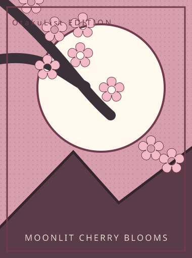
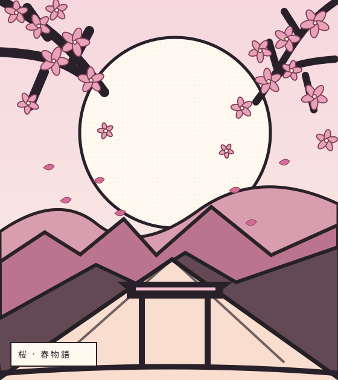
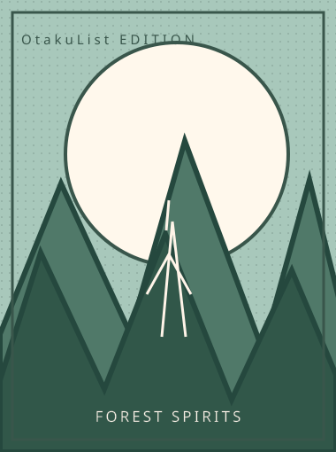
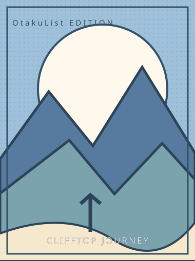
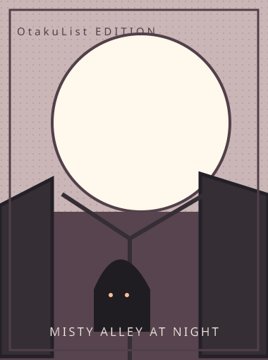

COUP DE CŒUR01Les fleurs du vide
Drame & fantastique · 12 chapitres
Des histoires qui font battre le cœur, des mondes à explorer et toute la magie d'un manga papier — à feuilleter sans modération.

桜の季節、新しい物語
COUP DE CŒUR01Drame & fantastique · 12 chapitres

NOUVEAUTÉ02Fantasy & mystère · 24 chapitres

À EXPLORER03Aventure · 36 chapitres

ÉDITION 202604Mystère · 8 chapitres
Les titres et les couvertures sont des créations de démonstration, sans catalogue réel ni lecteur en ligne à cette étape.
Les histoires continuent...
Un aperçu de ce que pourrait devenir OtakuList : des nouveautés mises en scène comme des pages de manga, sans sacrifier la clarté et la lisibilité d'un véritable site web.
Découvrir le projetPour les cœurs qui aiment les histoires tendres.
Pour celles et ceux qui préfèrent l'inconnu.
Pour les esprits qui rêvent de nouveaux horizons.